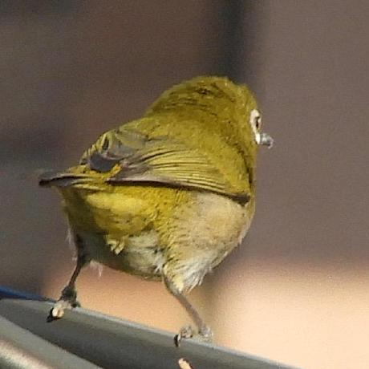

<div class="contents front-page">
  <div class="container">
    <div class="front-page-container">
      <div class="profile-img-container">
        
      </div>
      <div class="profile">
        <h2>Akari Haga (芳賀あかり)</h2>
        <p>1st year doctoral student at <a href="https://www.naist.jp/en/" style="text-decoration:none;">NARA Institute of Science and Technology (NAIST)</a> under the supervision of Prof. Taro Watanabe.</p>
        <br/>
        <div class="social-link" style="font-size: 2em; display: inline-block;">
          <div style="display: flex; align-items: center;"> 
            {% if site.author.github %}
              <i class="fa fa-github" style="width: 1em"></i><a href="https://github.com/{{ site.author.github }}" style="font-size: 0.5em; text-decoration:none;"> @akari000</a>
            {% endif %}
            <br/>
          </div>
          <div style="display: flex; align-items: center;">
            {% if site.author.twitter %}
              <i class="fa fa-twitter" style="width: 1em"></i><a href="https://twitter.com/{{ site.author.twitter }}" style="font-size: 0.5em; text-decoration:none;"> @_akari000</a>
            {% endif %}
            <br/>
          </div>
          <div style="display: flex; align-items: center;">
            <span>
            </span>
            <a href="https://scholar.google.com/citations?user=Mkd23TkAAAAJ&hl=ja&oi=sra" style="font-size: 0.5em; text-decoration:none; padding-left:0.2em"> Google Scholar</a>
            <br/>  
          </div>
        </div>
      </div>
    </div>
  </div><!--container-->
</div><!--main-->
